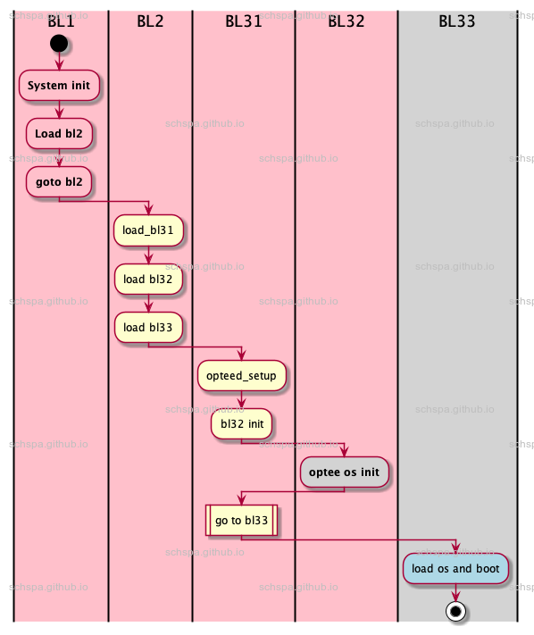

Boot process for optee
Table of Contents
QEMU Platform Boot architecture
from official atf code at 34efb683 @ m/master Merge pull request #1724 from jbech-linaro/emmc_enumeration
build command:
make BL32=tee-header_v2.bin BL32_EXTRA1=bl32_extra1.bin BL32_EXTRA2=bl32_extra2.bin BL33=bl33.bin PLAT=qemu ARM_TSP_RAM_LOCATION=tdram BL32_RAM_LOCATION=tdram SPD=opteed DEBUG=0 LOG_LEVEL=30
qemu optee boot architecture:

In qemu aarch64 platform, system will load & boot trust os before Nonsecure world os start.
BOOT analyze
ATF Part
arguments pass between different boot stages.
BL1
BL1 usually be used as bootrom and will pass one argument to Next stage bootloader.
/******************************************************************************** Structure used for telling the next BL how much of a particular type of* memory is available for its use and how much is already used.******************************************************************************/typedef struct meminfo {uintptr_t total_base;size_t total_size;} meminfo_t;
BL2
BL2 usually be used to load extra images, including BL31, BL32, BL33 etc.
When go to next stage image, it will pass image load information to next stage bootloaders.
Fellowing definition defined the struct format to pass.
/* BL image node in the BL image execution sequence */typedef struct bl_params_node {unsigned int image_id;image_info_t *image_info;entry_point_info_t *ep_info;struct bl_params_node *next_params_info;} bl_params_node_t;/** BL image head node in the BL image execution sequence* It is also used to pass information to next BL image.*/typedef struct bl_params {param_header_t h;bl_params_node_t *head;} bl_params_t;
BL31
BL31 usually be used as secure monitor, it will be running on the whold system life cycle.
BL31 will pass different arguments from bl_params to next stage images
In BL31 case, It just bypass arguments from bl2 to bl31 in our case.
SPD
BL31 initial all runtime service registered using the DECLARE_RT_SVC()
for OPTEE, it will be opteed_setup()
opteed_setup will do:
- Get secure image ep_info (BL2 will pass it to bl31 via x0).
- arguments for opteed including:
- opteed_rw
- OPTEE execution state information i.e. aarch32 or aarch64
- opteed_pageable_part
- pass to optee os as arg0
- opteed_mem_limit
- pass to optee os as arg1
- dt_addr
- pass to optee os as arg2
OPTEE Part
we have learn about how bootloader pass arguments to optee os, next we will going to optee part.
process state
In our case, it's OPTEE_AARCH64, secure world will be at MODE_EL1, MODE_SP_ELX, DISABLE_ALL_EXCEPTIONS.
Please notice, there is no secure EL2 at aarch64, only secure EL1.
- arguments:
- x0
- opteed_pageable_part
- x1
- opteed_mem_limit
- x2
- dt_addr
Services in secure monitor
Owning entity number
arm smccc defined SMC function call number, and OEM [50, 63] is for Trusted OS.
FAST CALL
opteed register fellowing fastcall, and it's usage is shown as fellowing.
| SMC function ID | Usage |
| TEESMC_OPTEED_RETURN_ENTRY_DONE | Called by OPTEE when optee os initial done |
| TEESMC_OPTEED_RETURN_ON_DONE | psci stub |
| TEESMC_OPTEED_RETURN_RESUME_DONE | psci stub |
| TEESMC_OPTEED_RETURN_OFF_DONE | psci stub |
| TEESMC_OPTEED_RETURN_SUSPEND_DONE | psci stub |
| TEESMC_OPTEED_RETURN_SYSTEM_OFF_DONE | psci stub |
| TEESMC_OPTEED_RETURN_SYSTEM_RESET_DONE | psci stub |
| TEESMC_OPTEED_RETURN_CALL_DONE | Return to NON Secure World from function call |
| TEESMC_OPTEED_RETURN_FIQ_DONE | Return to NON Secure World when S-EL1 FIQ done |
calling optee_vector_table->fast_smc_entry
YIELD CALL
There is no handler in bl31 to handle yield call, bl31 only bypass this request to S-EL1.
calling optee_vector_table->yield_smc_entry
OPTEE code
optee image type
For information about optee image
https://optee.readthedocs.io/en/latest/architecture/core.html#pager
in our case, qemu aarch64 don't use pager, and only use paged image.
optee os main images: optee_os/out/arm/core/tee-pager_v2.bin
entry point
- init exception vector table.
- clear bss section
- setup stack pointer.
- dcache invalidation
- console initialize
- mmu initialize
- optee thread init
- setup nonsec memory
- add optee service node to device-tree
- config console driver according to device-tree
- init gic
- dcache clean & invalidation
- Call smc return to Secure Monitor
Finally, system will return a service vectory table to secure monitor.
From now, optee os boot complete.
Conclusions
- optee boot process is very light, and should consumes a very short time to boot.
- optee will register callbacks to secure monitor & add service node to device tree.